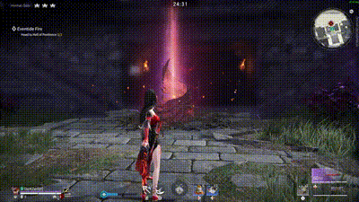
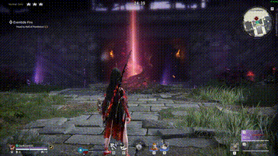
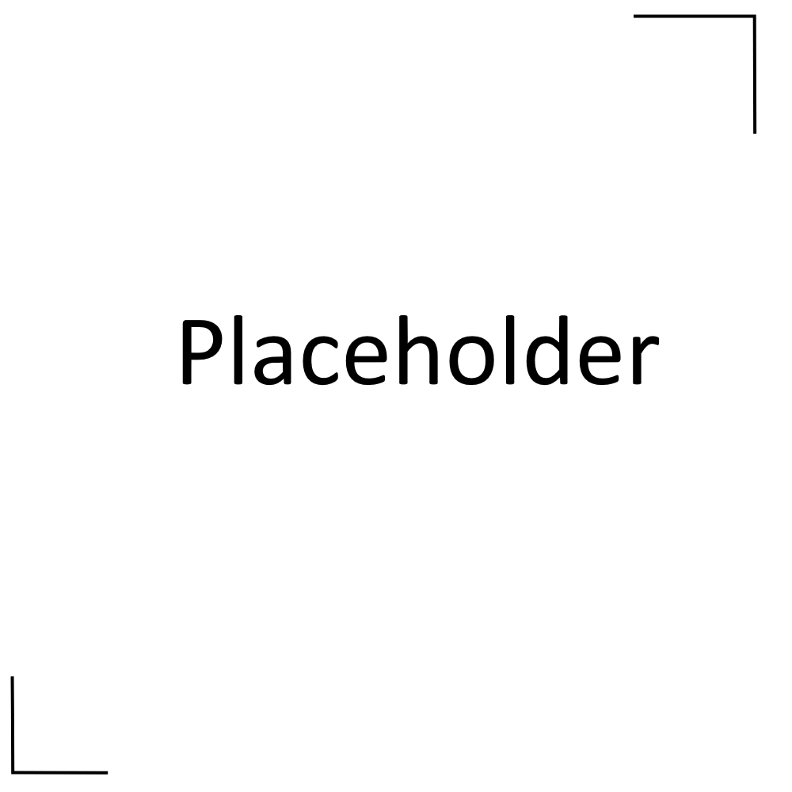

This section will cover the ideal Attack Rotations you should be using for specific heroes in most situations.
An Attack Rotation is a set of attacks and other actions you carry out in repetition to deal consistent damage output.
In most cases an Attack Rotation consists of using a Charged Attack followed by a Dodge or a Charged Attack followed by an Uncharged Attack.
Viper Ning
Standard Charged Attack Rotation

With Blue Moon

Feria Shen
With Velocity Untold

Without Velocity Untold
Tianhai
With Jabbing
Without Jabbing
Temulch
Standard Rotation
Tarka Ji
Standard Rotation
Kurumi
Standard Charged Attack Rotation
With Stamina Strike
Valda Cui
Standard Rotation
Yueshan
Standard Rotation
Matari
With Assassin's Lunge
With Honed Tyranny
Dodge Canceling
Dodge Canceling, the act of canceling your end-lag by using a dodge, is crucial to master to improve your DPS in Showdown.
This is especially so if you have Stormstride equipped in that it can increase the DPS of some moves by over 30%!
How To Do: Dodge while holding some direction, then rapidly switch that direction when the dodge starts and start your next attack simultaneously.
Knowing Your Openings
When fighting a boss, it is important to know what moves come at the end of their attack chains. By understanding the attack patterns, you will know the safest times to use skills like your martial skill, Aegis-Break.
You'll also know when to prepare to counter, defuse, or dodge the next attack.
On Hard difficulty, the openings to strike back become smaller than on Normal.
On difficulties like Nightscream and Speedrun, the openings are even tighter and the boss attack chains are longer.
Additionally, if you learn each boss's attack sequence, you'll be able to anticipate and properly respond to upcoming strikes instead of being caught off guard.
This allows you to take advantage of parrying opportunities on certain focus attacks.
It is equally important to avoid heavy investment attacks while a boss's attack chain is ongoing.
Bosses may randomly switch aggro or use a full-body attack mid-chain, making it risky to commit to long attack animations.
Parry Chains
Solo Parry Chain
Duo Parry Chain
On Hard difficulty and above, bosses gain a chance to counterattack shortly after you parry them.
This can lead to a "Parry Chain" - a quick sequence of repeated parries that deals major Aegis and health damage, immobilizes the boss, and interrupts their attack chain.
Performing Parry Chains can be challenging with the default counter attack due to its longer animation compared to a weapon sap counter.
However, you can still pull them off by dodge canceling the counterstrike early to be safe, although this sacrifices some damage.
If you seem to be the only one on your team looking for counter windows, I'd recommend canceling your counters early in most cases.
The best approach is to coordinate Parry Chains between at least two players - one to initiate the first parry and another to follow up on the boss's retaliation strike.